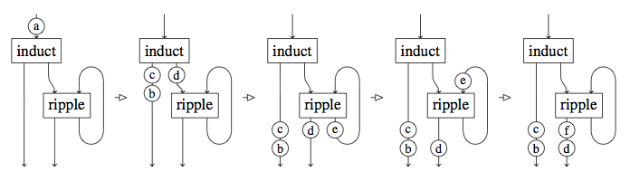
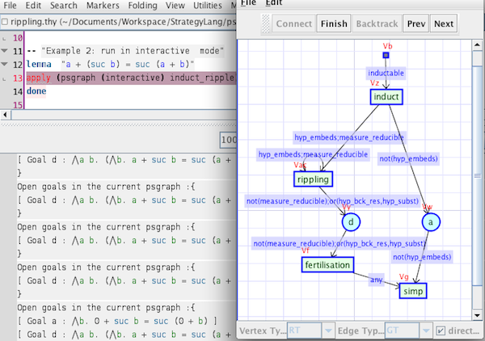

<div id="content-wrapper">
<div class="inner clearfix">
<section id="main-content">
<h3>
<span class="octicon octicon-link"></span></a>PSGraph
</h3>
<hr>

<p>Proof-strategy graphs (PSGraphs) is a formalism that represents proof strategies as graphs, where tactics appear on nodes in a graph, and are connected by ‘piping’ them together. To prove a goal in such strategies, the goal is wrapped in a particular graph node, called goal node, and put in one of the input pipes of the graph. The tactic at the end of this pipe, will then consume this goal node, apply the tactic to the goal, and send any (wrapped) sub-goals to the output pipes. Properties of the pipes ensure that only the right ‘type’ of goals are accepted. </p>


 <center></center>

<h3>
<span class="octicon octicon-link"></span></a>Tinker
</h3>
<hr>

<p>The Tinker tool, which is a first implementation of PSGraphs. It adopts a generic theorem prover independent framework. We have currently connected it to both Isabelle and ProofPower. It is important to note that this is an extension of these provers. Users of these systems will still use the existing interface, with an additional graphical interface to step through the evaluation of a PSGraph. 
</p>

 <center></center>

<h3>
<span class="octicon octicon-link"></span></a>Publication
</h3>
<hr>
{% include publications.html %}


<h3>
<span class="octicon octicon-link"></span></a>Talks
</h3>
<hr>
{% include talks.html %}

</section>

        <aside id="sidebar">
         <a href="https://github.com/ggrov/tinker/zipball/master" class="button">
            <small>Download</small>
            .zip file
          </a>
          <a href="https://github.com/ggrov/tinker/tarball/master" class="button">
            <small>Download</small>
            .tar.gz file
          </a>
          

        </aside>
        
      </div>
    </div>

